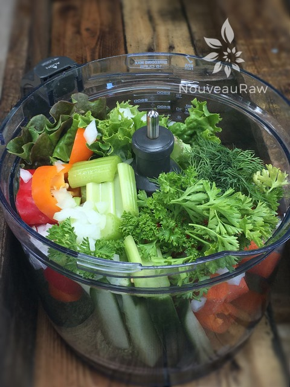
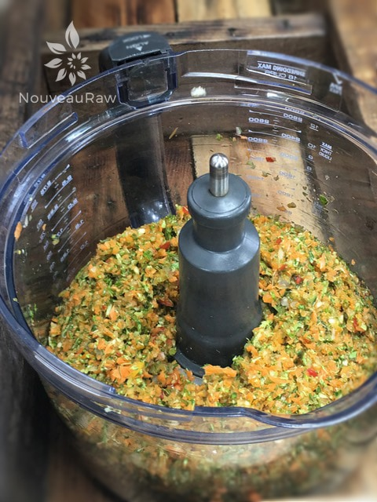
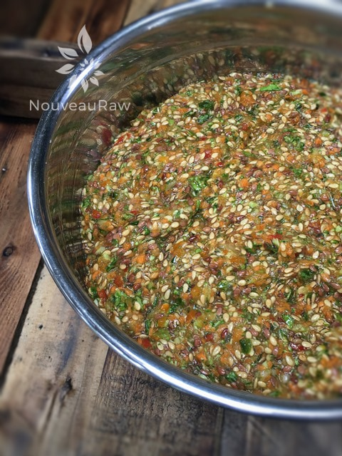
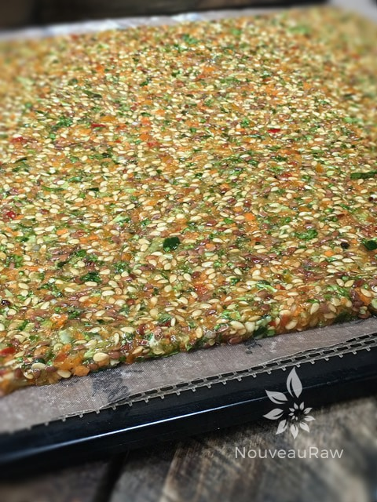
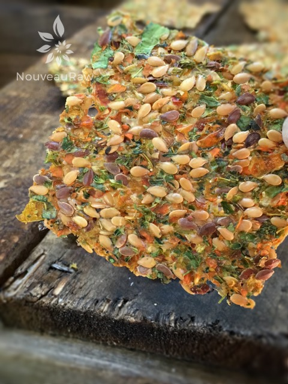

Abundant Veggie Flax Crackers
~ raw, vegan, gluten-free, nut-free ~
As you scroll down to the recipe list you will find that there really isn’t one. (gasp) Crazy huh? This is one of those recipes where I didn’t measure a darn toot’n thing. There can be a slight downside to this approach…. you could possibility create a household favorite and now you don’t have measurements in order to replicate the recipe. Well, that is exactly what happened here.
I was sort of kicking myself but I decided to reframe the situation and turn it into a possible lesson. The lesson being that you can open up the fridge and pull out all those tidbits of veggies that need to get used and create a healthy, wholesome cracker.
Along with the veggies, you will want to add some soaked flax or chia seeds and sprinkle with some seasonings. My ratio goes something like this; 2 cups of flax (soaked in 2 cups of water) to one food processor full of fresh veggies. Seasoning is always different based on what we are hungry for. So this is a great time to be creative.
The items listed below will give you an idea of what I needed to tend to, but don’t limit yourself to them. And please don’t be intimated by this process. It is quite freeing and a good launching off tool in becoming a more creative chef. :) Trust me. I wouldn’t put you in a place of failure.
Think of it this way… when you make a salad, you pretty much add what you have into a bowl and have at it. Same concept when making crackers except we are going to add the flax or chia as a binder to hold it all together.
- 2 cups flax seeds, soaked in 2 cups water
- Carrots
- Broccoli
- Onion
- Zucchini
- Yellow squash
- Garlic cloves
- Apple
- Fresh Parsley
- Tomatoes
- Celery
- Salt & pepper
- Italian seasoning
Preparation:
- Soak the 2 cups of flax seeds in 2 cups of water for 30-60 minutes, or until all the liquid is well absorbed.
- Rough chop all the veggies and load up the food processor that has been fitted with an “S” blade. Use the pulse button so the blades continue to pull the veggies into the blades.
- Once everything is broken down, you can blend it as creamy as you want it or you can leave it chunky. No science to this part at all. The chunkier you leave the more pops of color it will have.
- Spread the mixture on non-stick sheets, taking it from one edge to the other. Be sure to spread it evenly so it dries evenly.
- Dehydrated at 145 degrees for 1 hour, then reduce to 115 degrees for up to 16 hours.
- About 1/2 way through the dry time, flipped the crackers over and peel off the non-stick sheet. This will allow the air to fully circulate around the crackers and speed up the dry time.
- Dry times will always vary depending on the climate, humidity, and how thick or thin you spread the batter.
- At the flipping time, score lines into the sheet of batter to create cracker shapes.
- Once dry and cooled, snap them into cracker sizes and stored them in a zip-lock bag.
Culinary Explanations:
- Why do I start the dehydrator at 145 degrees (F)? Click (here) to learn the reason behind this.
- When working with fresh ingredients it is important to taste test as you build a recipe. Learn why (here).
- Don’t own a dehydrator? Learn how to use your oven (here). I do however truly believe that it is a worthwhile investment. Click (here) to learn what I use.





© AmieSue.com